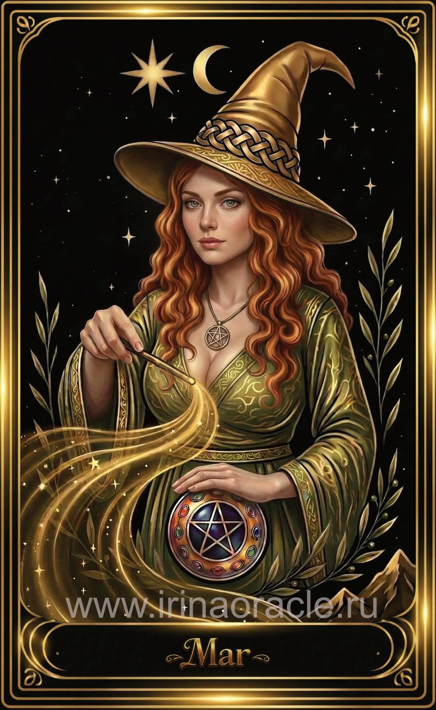

Маг — значение карты Таро
Маг — значение карты Таро

Маг — это карта силы намерения, концентрации и осознанного действия. Она/он символизирует способность человека управлять энергией, направлять её в нужное русло и превращать идеи в реальность. Маг появляется тогда, когда важно проявить волю, взять инициативу и использовать свои таланты максимально эффективно. Это карта творца, мастера и того, кто знает, чего хочет.
Общее значение
Маг — это первый шаг после импульса Шута. Если Шут — вдохновение, то Маг — действие. Карта говорит о том, что у человека есть все инструменты, чтобы реализовать задуманное: знания, энергия, ресурсы и внутренняя сила. Это момент, когда важно не ждать, а действовать уверенно и целенаправленно.
Маг указывает на ясность ума, инициативу, лидерство и способность влиять на ситуацию. Она/он напоминает: реальность формируется там, где внимание соединяется с волей.
Любовь и отношения
В любви Маг говорит о сильном интересе, инициативе и активном проявлении чувств. Это карта притяжения, харизмы и уверенности. Она может указывать на начало отношений, где один из партнёров играет ведущую роль или обладает яркой энергетикой — независимо от пола.
В тени Маг предупреждает о манипуляциях, скрытых мотивах или попытке контролировать партнёра. Важно сохранять честность и прозрачность, чтобы энергия карты проявилась гармонично.
Работа и финансы
В сфере работы Маг — это знак профессионализма, мастерства и уверенного старта. Карта указывает на проекты, требующие концентрации, коммуникации и умения управлять процессами. Это благоприятное время для новых начинаний, переговоров, презентаций и проявления лидерства.
В финансах Маг говорит о возможностях, которые открываются благодаря инициативе и умению правильно распоряжаться ресурсами. Главное — не распыляться и действовать стратегически.
Здоровье
Маг указывает на хорошую концентрацию энергии, восстановление сил и способность управлять своим состоянием. Это карта, которая поддерживает любые практики, связанные с осознанностью, дыханием, вниманием и дисциплиной.
В тени может говорить о нервном перенапряжении или попытке «держать всё под контролем». Важно давать себе отдых и не требовать от тела невозможного.
Совет карты
Действуй. Используй свои таланты, знания и ресурсы. Маг говорит: у тебя есть всё необходимое, чтобы добиться результата. Не сомневайся в себе и направляй энергию туда, где она принесёт наибольшую пользу.
Это время проявлять инициативу, говорить уверенно, брать ответственность и становиться автором своей реальности.
Теневая сторона
В тени Маг проявляется как манипуляция, хитрость, игра на слабостях других или использование знаний во вред. Это энергия, которая может увести в сторону от честности и внутренней чистоты.
Карта предупреждает: сила — это ответственность. Важно использовать свои способности во благо, а не ради контроля или превосходства.